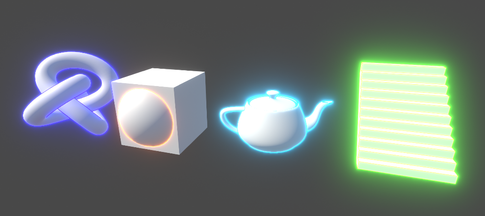
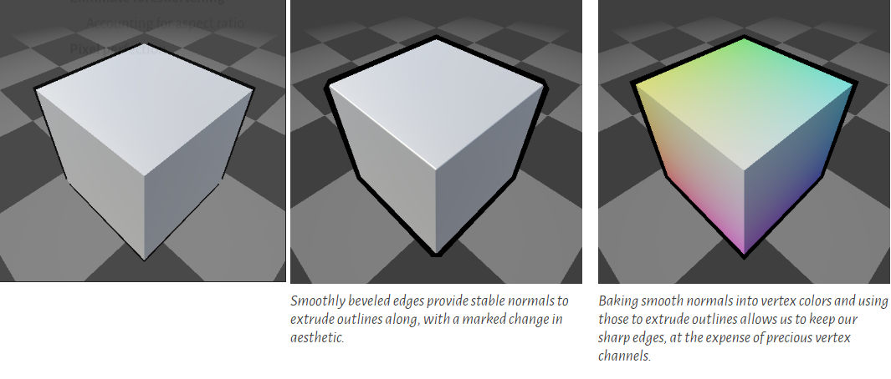
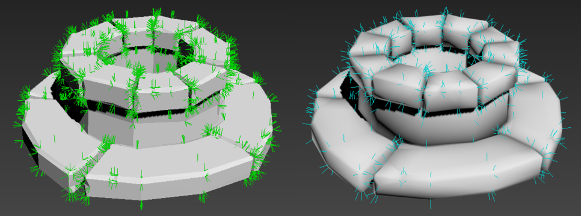
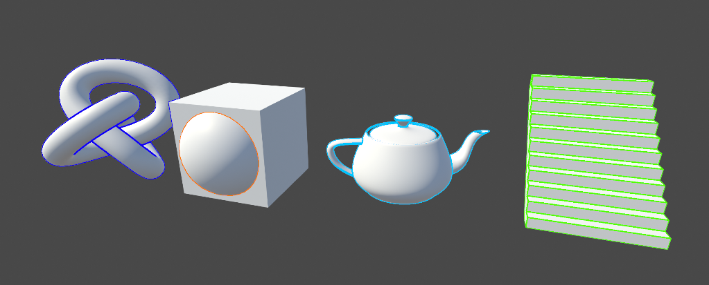
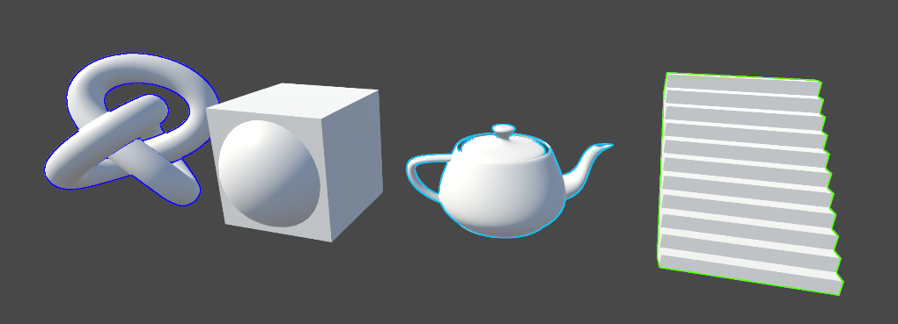
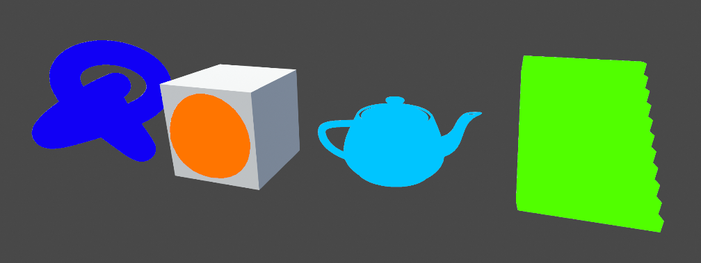
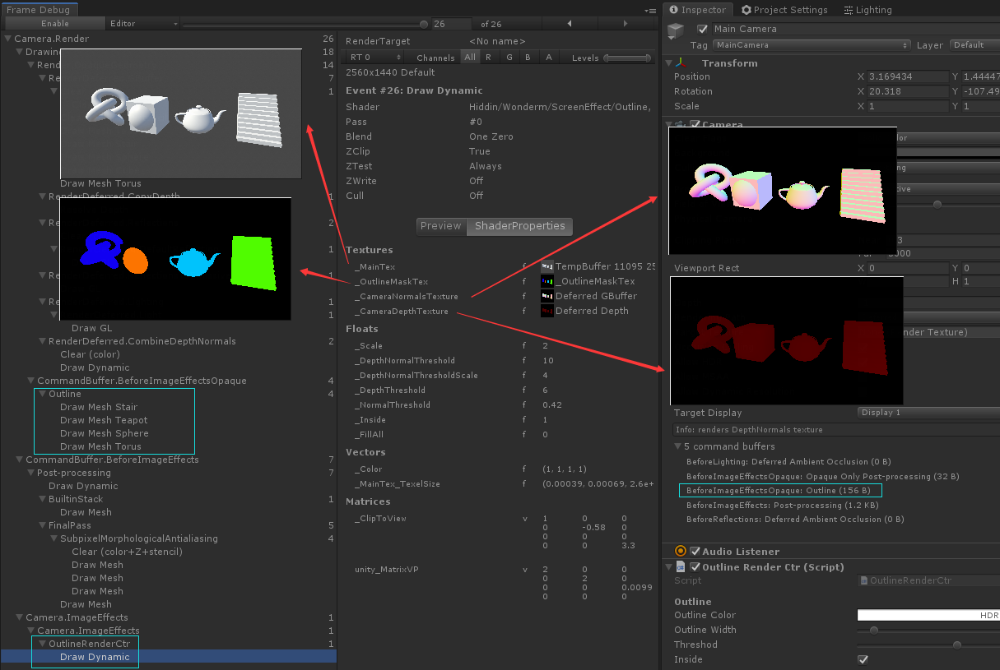
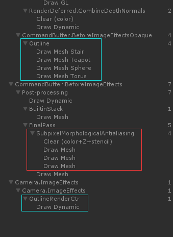
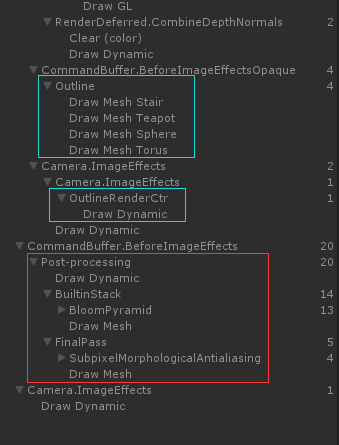

今天来实现上次留下的描边
效果预览

描边算法的一般原理
NdotV 边缘发光
视线方向与法线方向 dot ，检测边缘
适合面数多形状复杂的模型
对于硬边的基本几何体如Cube等无解
Backface 正面剔除
多加一个 Pass 只渲染背面，将顶点沿法线向外挤出
是最普遍的描边方式 , 高要求的团队可以定制各种风格
对于硬边几何体如Cube会出现面断开的问题
需要专门处理顶点的法线保证其连续
处理方式可以参照下面几篇文章中介绍的方法
3D软件中平滑法线
Pixel-Perfect Outline Shaders for Unity

编写引擎工具自动检测法线并修改
유니티 외곽선 셰이더 완벽정리편

Edge Detection 图像边缘检测
图像处理中常见的使用 Sobel 算子来进行边缘检测
高质量的检测一般通过如下三个步骤
- Sobel Color
- Sobel Depth
- Laplacian Depth and Normal
基本概念：Sobel operator
本次我们参考一篇已经实现了上述过程的文章
Outline Shader
基于屏幕后期的描边可以保证像素对齐，距离无关的控制描边宽度等
不需要对模型制作流程有影响，可以针对屏幕深度和法线做特殊处理
目标
- 可选对象
- 屏幕后期描边
- 对象描边颜色可修改
- 其他后期叠加兼容
基本实现
对象标记
之前做过 CommandBuffer_01 标记特殊区域 ，复用代码得到Mask图像
本次我们允许指定颜色，每对象单独指定材质球且实时更新，通过CommandBuffer渲染到指定 RT 上
1 | outlineBuffer = new CommandBuffer(); |
参数准备
传入基本参数1
2
3
4
5
6
7
8
9
10
11
12Matrix4x4 clipToView = GL.GetGPUProjectionMatrix(cam.projectionMatrix, true).inverse;
Shader.SetGlobalMatrix(clipToViewId, clipToView);
if (outlineMat == null) {
outlineMat = new Material(Shader.Find("Hiddin/Wonderm/ScreenEffect/Outline"));
}
outlineMat.SetFloat(outlineWidthId, outlineWidth);
outlineMat.SetColor(outlineColorId, outlineColor);
outlineMat.SetFloat(thresholdId, threshod);
outlineMat.SetFloat(insideID, inside ? 1 : 0);
outlineMat.SetFloat(fillAllID, fillAll ? 1 : 0);
后期参数声明1
2
3
4
5
6
7sampler2D _MainTex;
float4 _MainTex_TexelSize;
sampler2D _CameraDepthTexture;
sampler2D _CameraNormalsTexture;
sampler2D _OutlineMaskTex;
后期处理
1 | private void OnRenderImage(RenderTexture sourceTexture, RenderTexture destTexture) |
效果
描边

外描边

填充

原理图解

缺陷修复
后期效果并没有与 Unity 的 PostProcessV2 叠加AA 和 Bloom 完全避开了我们的描边
打开 FrameDebug 一探究竟
描边的工作原理如下

蓝色为描边的流程，上面的是对象绘制，下面的是后期描边
红色的是 PostProcessV2 的处理
我们的后期工作在 Unity 的后期之后了
通过对后期方法添加属性标记让他工作在 PostProcessV2 之前即可
并且将 Mask 图的格式改为 ARGBFloat 来支持 HDR
修改代码1
2
3
4
5
6
7
8
9
10
11
12
13
14 outlineBuffer.GetTemporaryRT(outlineMaskId, -1, -1, 24, FilterMode.Bilinear, RenderTextureFormat.ARGBFloat);
[ImageEffectOpaque]
private void OnRenderImage(RenderTexture sourceTexture, RenderTexture destTexture)
{
if (outlineBuffer == null)
{
Graphics.Blit(sourceTexture, destTexture);
}
else
{
Graphics.Blit(sourceTexture, destTexture, outlineMat);
}
}
再次检视 FrameDebug 看到了我们预期的效果

最终效果
但是这篇文章还不能结束，因为发现 PostProcessV2 并没有使用 OnRenderImage 方法
他的所有方法都在 Post-processing 里实现了
那么下篇我们也通过一样的方法来实现后期效果
参考资料
Edge detection image effect
Pixel-Perfect Outline Shaders for Unity
유니티 외곽선 셰이더 완벽정리편
Edge Detection Shader Deep Dive
Outline Shader